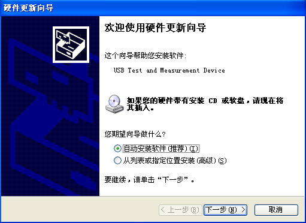

编程准备
首先确认您的电脑上是否已经安装NI的VISA库（可到NI网站http://www.ni.com/china下载）。本文中默认安装路径为C:\Program Files\IVI Foundation\VISA。
本文应用示波器的USB接口与PC通信。请使用USB数据线将示波器后面板的USB Device接口与PC相连。示波器与PC正确连接后，接通仪器电源，此时PC上将弹出“硬件更新向导”对话框，请按照向导的提示安装“USB Test and Measurement Device”。

至此，编程准备工作结束，下面将详细介绍在Visual C++ 6.0，Visual Basic 6.0和LabVIEW 8.6开发环境中的编程实例。